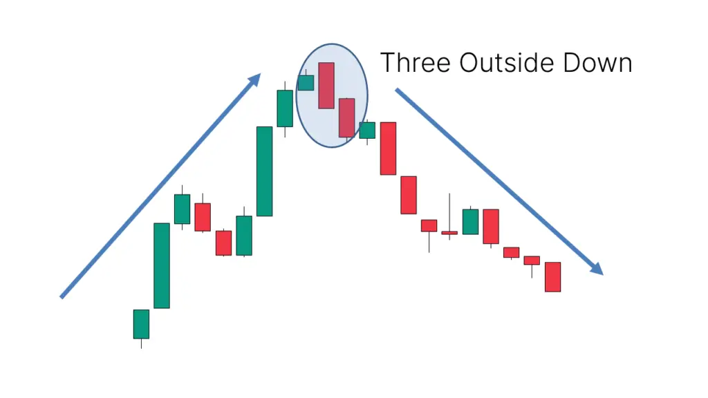

மூன்று வெளி கீழே அமுகம் ஒரு வர்த்தக முனைவு, இது சந்தையின் மேற்கு
பிரவுடி எழுத்தை ஒழிக்கும் மற்றும் கீழ்க் குறில் வழங்கும் குறிப்புகள். இந்த முனைவு
மூன்று மொம்பட்டி கந்தில்ஸ்டிக்ஸ் மூலம் உருவாக்கப்படும். முதன்முதல் கந்தில் ஒரு உயர்
மொம்பட்டி கந்தில், இரண்டாவது மொம்பட்டி ஒரு கீழ் முகம் கந்தில் முதன்
மொம்பட்டி உடலை முழுமையாக அவை உயர்வாக மாற்ற முடியாது, மூன்றாம் மொம்பட்டி முகம்
இரண்டாம் மொம்பட்டி உடலை முழுமையாக மறைய முடியவில்லை ஒரு கீழ் முகம் கந்தில்-மொம்பட்டி.
